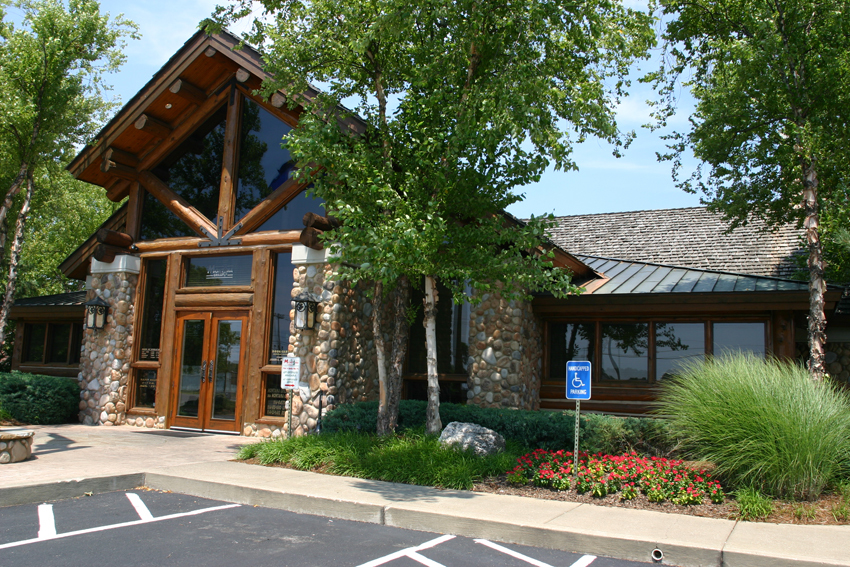

Map of Bowling Green Restaurants
New Maps Plus
Authored by Heather Cowherd
This web page contains information related to my final project for MAP 671. The map located at the top of this web page is a visualization of the various restaurants located in Bowling Green, KY. Each point on the map represents a restaurant. 276 different restaurants are represented on this map. The map uses geocoding.
Purpose
For my final project, I decided to create a map which illustrates the different types of ownerships for restaurants located in the City of Bowling Green, KY (Warren County). This map shows how many restaurants are either privately owned (local), part of a local chain of restaurants, or are corporately owned (part of a franchise).
On the map, private restaurants are represented by a red point, local chain restaurants are represented by a light green point, and corporate restaurants (part of a franchise) are represented by a light blue point. Also, on the map, the points are labeled as either private (light blue), local chain (light green), or corporate (red). By using the zooming in feature, the viewer will be able to obtain a closer look at these different restaurants. Additionally, when zooming in at about 16, the viewer should be able to see the name of the restaurant. All of the surrounding counties can also be veiewed when the map is zoomed out.
Data Sources
A shape file containing information about the US counties was extracted from the US Census website. QGIS 3.14.16 was used to create a Centroids layer and to convert the file to a GeoJSON so that it can be used as a dataset in Mapbox.
The data used for this map was an excel file containing the restaurants that have an occupational license through the local city government. This data was obtained after submitting an Open Records Request to the City of Bowling Green.
Since the data within the excel file was accurate as of April 2019, I also used data from the Bowling Green Area Convention & Visitors Bureau and the Bowling Green Area Chamber of Commerce which contains information about the different restaurants in Bowling Green, KY. Additionally, I used Google to manually search information on these different restaurants in order to confirm that these restaurants were still active and to determine whether a restaurant was privately owned, part of a local chain, or part of a franchise (corporate). Local restaurants where the owner has only one restaurant were identified as a 'privately owned restaurant.' Restaurants where identified as being a 'local chain restaurant' if the local restaurant owner had more than one restaurant and did not have restaurants located in more than two states. Restaurants that were a part of a franchise were listed as 'corporate.'
The map was created using the software QGIS 3.14.16 and using ESRI Server data harvested from the MMQGIS plugin (for geocoding).
Coordinate Reference System: NAD83 / Kentucky Single Zone (ftUS) (EPSG: 3089)
The GeoJSON files containing the restaurant data can be found on my GitHub Repo.
Tools used in this project
- Data is shown on Mapbox web map with geolocation services enabled. If the map got popular it would require a fee to use.
- Mapbox's tilesets were used to create map layers.
- I used the software QGIS 3.14.16 in order to geocode the excel file (using the Geocode with CSV Web Service option). Also, I used the software to convert my filtered data (output from geocode) to a GeoJSON file in order to load it as a dataset in Mapbox.
- The major water feature labels, place labels, and road labels use BellTopo Sans designed by Sarah Bell, a cartographer inspired by historic USGS maps.
Contact Information
- See my projects on GitHub: View Profile
- Contact Me: heather.cowherd@uky.edu
The image below is of the local restaurant Montana Grille. This restaurant is listed as being one of the top 10 restaurant in Bowling Green, KY on Tripadvisor. Source for photo: Bowling Green Area Convention & Visitors Bureau
